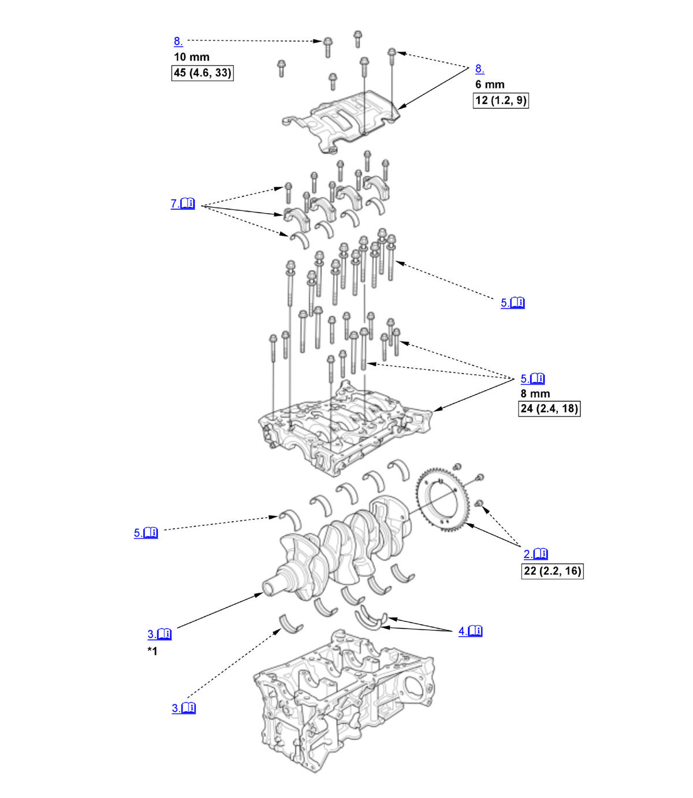

Crankshaft and CKP Pulse Plate Removal, Installation, and Inspection (K20C1) (2017 2018 2019 2020 2021): Installation: Procedure
Numbered call-outs in figure pertain to list numbers in following procedure.

Courtesy of HONDA, U.S.A., INC. |
Detailed information, notes, and precautions |
 |
Torque: N.m (kgf.m, lbf.ft) |
| *1 | These parts have inspection items. |
- Crankshaft Main Bearing Clearance - Check
- CKP Pulse Plate - Install
NOTE: Apply new engine oil to the threads of the CKP pulse plate mounting bolts.
- Crankshaft - Install
1. Install the bearing halves in the engine block and the connecting rods. 2. Apply a coat of new engine oil to the main bearings and the connecting rod bearings.
3. Hold the crankshaft so rod journal No. 2 and rod journal No. 3 are straight up, then lower the crankshaft into the engine block.
- Thrust Washer - Install
1. Apply new engine oil to the thrust washer surfaces. Install the thrust washers (A) in the No. 4 journal of the engine block. - Lower Block - Install
1. Apply liquid gasket to the engine block mating surface of the lower block, and to the inside edge of the threaded bolt holes.
2. Put the lower block on the engine block.
3. Apply new engine oil to the threads and flange of the bearing cap bolts.
4. Torque the bearing cap bolts, in sequence, to 35 N.m (3.6 kgf.m, 26 lbf.ft).
5. Tighten the bearing cap bolts an additional 41 deg.. 6. Torque the 8 mm bolts, in sequence, to the specified torque. - Connecting Rod Bearing Clearance - Check
- Connecting Rod bearing Cap and Bearing Half - Install
1. Measure the diameter of each connecting rod bolt at point A and point B. 2. Calculate the difference in diameter between point A and point B.
3. If the difference in diameter is out of specification, replace the connecting rod bolt.
Point A-Point B = Difference in Diameter Difference in Diameter Specification: 0-0.05 mm (0-0.0020 in) 4. Apply new engine oil to the threads and flanges of connecting rod bolts (A). 5. Seat the rod journals into connecting rod No. 1 and connecting rod No. 4. Line up the mark (B) on the connecting rod and the connecting rod bearing cap.
6. Install the connecting rod bearing caps and the bolts finger-tight.
7. Rotate the crankshaft clockwise, and seat the journals into connecting rod No. 2 and connecting rod No. 3. Line up the mark on the connecting rod and the connecting rod bearing cap.
8. Install the connecting rod bearing caps and the bolts finger-tight.
9. Tighten the connecting rod bolts to 5.0 N.m (0.51 kgf.m, 3.7 lbf.ft).
10. Tighten the connecting rod bolts to the specified torque. 11. Tighten the connecting rod bolts an additional 120 deg.
NOTE: Remove the connecting rod bolt if you tightened it beyond the specified angle, inspect the connecting rod bolts. Do not loosen it back to the specified angle.
Specified Torque: 39 N.m (4.0 kgf.m, 29 lbf.ft) - Baffle Plate - Install
- Oil Pump Chain and Crankshaft Sprocket - Install
- Oil Pump - Install
- Oil Pan - Install
- Cylinder Head - Install
- Transmission End Crankshaft Oil Seal - Install
- Pressure Plate, Clutch Disc, and Flywheel - Install
- Transmission - Install
- Engine - Install